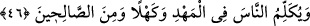

46. O, sâlihlerden olarak beşikte iken ve yetişkinlik hâlinde insanlara (peygamber
sözleri ile) konuşacak.
“Beşiğinde de yetişkinlik hâlinde de insanlarla konuşur.” Yani çocuk iken de
konuşur, büyük iken de. Peygamberlerin sözlerinde farklılık yoktur. Yani değişik
zamanlarda söyledikleri sözler arasında tutarsızlık sözkonusu değildir. Yani
çocukluklarında söyledikleri sözlerle, ileri yaşlarındaki sözleri aynı esas üzerinde ve
aynı
özelliktedir.
Peygamberlerin,
çocukluklarında
söyledikleri
sözler
de
peygamberlerin ve hikmet ehlinin sözleri gibidir ve şüphesiz en büyük mûcizelerdendir.
Mücâhid şöyle demiştir: “Meryem şöyle anlattı: Ben, Îsâ ile yalnız kaldığım zaman
ona konuşurdum, o da bana konuşurdu. Bir insan beni ondan meşgul ettiği zaman o,
karnımda tesbîhe devam ederdi; ben de onu işitirdim.” Îsâ’nın onlarla konuşması, onun
hudûsuna; yani sonradan olduğuna delildir. Çünkü sesler ve harfler hâdistir.
Rivâyet olunduğuna göre Îsâ (a.s.) otuz yaşına ulaştığı zaman Allah onu
İsrâiloğulları’na peygamber olarak gönderdi. Peygamber olarak otuz ay kadar vazifesine
devam etti. Sonra göğe kaldırıldı. Yahud o otuz yaşına bastığı zaman vahiy geldi. Üç
sene ve birkaç ay peygamberlik vazifesine devam etti ve sonra göğe kaldırıldı.
Kehl, otuz yaşını geçip kırka yaklaşan, yaşlılığa yaklaşan demektir. “Nebât” kehl oldu
demek, kurumaya yaklaştı demektir. Bu sebeple Îsâ (a.s.)’ın kühûlete (orta yaşlılık
çağına) ulaştığını, insanlarla konuştuğunu, sonra göğe ref’ olunduğunu söylemek
doğrudur. Kühûlet yaşının başlangıcının kırk yaş olduğunu ve onun insanlara yaşlı iken
konuşacağını söyleyenlere göre bu, Îsâ (a.s.) gökten indikten sonra olacaktır. Âhir
zamanda gökten inecek, insanlara konuşacak ve Deccal’ı öldürecektir.
“Ve o sâlihlerdendir.” Sayılan bu dört hal, “Kelime”nin yani Îsâ (a.s.)’ın halleridir.
Mânası; “Allah seni sıfatları şunlar olan bir oğulla müjdeliyor” demektir. Bazı
sıfatlardan sonra onun sâlihlerden olacağının zikredilmesi, kişinin sâlih olmasından
daha büyük bir mertebenin olmayacağına delildir. Kişi, bütün hallerinde doğru bir
üslupla, doğru yolda devam etmediği müddetçe sâlih olamaz. Mâlumdur ki salâh hâli,
dinde ve dünyada kalplerin ve diğer bütün organların işlerinde insanın ulaşacağı bütün
makamları içine alır.